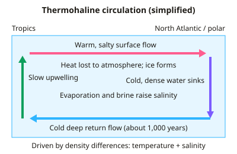

A-level Geography Year 13 · Topic 18
Exploring oceans
Exploring oceans looks at the oceans as a system, a resource, and a place under growing pressure.
We will study ocean currents and circulation, and the resources the oceans provide.
Then we examine ocean pollution, the effects of climate change, ocean governance, and sustainable management.
- 6 subtopics
- 255 questions
- Free: 18.1 notes and 10 questions
In this topic
- 18.1Ocean systems: currents, thermohaline circulation and ocean-atmosphere interactionsFree below · 43 questions
- 18.2Ocean resources: fisheries, energy, minerals and seabed exploitationOpen in Full Marks · 38 questions
- 18.3Ocean pollution: plastics, chemicals and oil, and impacts on marine lifeOpen in Full Marks · 36 questions
- 18.4Oceans and climate change: warming, acidification and sea level riseOpen in Full Marks · 82 questions
- 18.5Ocean governance: UNCLOS, EEZs, high seas and conflictsOpen in Full Marks · 29 questions
- 18.6Sustainable ocean management: marine protected areas and the blue economyOpen in Full Marks · 27 questions
18.1 · Free notes
Ocean systems: currents, thermohaline circulation and ocean-atmosphere interactions

Key points
- Oceans cover about 71% of Earth's surface and have absorbed over 90% of the excess heat from the enhanced greenhouse effect. They act as a huge heat store that moderates climate.
- Surface currents are driven by prevailing winds (trade winds and westerlies). The Coriolis effect and continental coastlines deflect them into circular gyres: clockwise in the Northern Hemisphere, anticlockwise in the Southern.
- Western boundary currents (Gulf Stream, Kuroshio) are warm, fast, narrow and deep. Eastern boundary currents (Canary, California, Humboldt/Peru, Benguela) are cool, slower and broader.
- Thermohaline circulation (the global conveyor belt) is driven by density differences set by temperature (thermo) and salinity (haline). Cold, salty water sinks at high latitudes and flows slowly at depth.
- Deep water forms mainly in the North Atlantic (North Atlantic Deep Water) and around Antarctica. Sea-ice formation rejects salt (brine rejection), so the remaining water is denser. One full circuit takes roughly 1,000 years.
- The North Atlantic Drift (part of the AMOC, Atlantic Meridional Overturning Circulation) keeps NW Europe several degrees warmer than places at the same latitude, such as Labrador. Greenland meltwater could freshen and weaken it.
- Upwelling brings cold, nutrient-rich water to the surface (Peru, Benguela, California). This supports phytoplankton blooms and productive fisheries. Cold currents also cool coastal air and help create coastal deserts such as the Namib.
- ENSO: normally trade winds pile warm water in the west Pacific and upwelling occurs off Peru. In El Niño (every ~2–7 years) the trade winds weaken, warm water spreads east and the thermocline deepens. Upwelling is suppressed, anchovy catches collapse and global weather is disrupted. La Niña is the opposite phase.
- Ocean–atmosphere interactions: evaporation transfers latent heat to the atmosphere. This powers tropical cyclones, which need sea-surface temperatures of at least 26.5°C. Oceans and atmosphere together transport heat from the tropics towards the poles.
- Oceans absorb roughly 25–30% of anthropogenic CO₂ (carbon sink) through the physical and biological pumps. This causes ocean acidification (pH down ~0.1 since pre-industrial times). Warming also causes thermal expansion and sea-level rise.
- Calculation tips: speed = distance ÷ time (1 m/s = 3.6 km/h). Ocean volume transport is measured in sverdrups (1 Sv = 10⁶ m³/s); the Florida Current carries about 30 Sv.
In more detail
- Gulf Stream: carries warm water north-east across the Atlantic, keeping the UK much milder than other places at the same latitude.
- Thermohaline circulation: cold, salty water sinks in the North Atlantic and travels the world's oceans in a cycle taking about 1000 years.
- AMOC risk: scientists warn the Atlantic overturning circulation is weakening and could slow sharply this century.
- Upwelling: cold, nutrient-rich water rises off Peru, supporting one of the world's largest fisheries.
- El Niño: weakens this upwelling, hitting fish catches and shifting rainfall worldwide.
Practice
Ocean systems: currents, thermohaline circulation and ocean-atmosphere interactions: 10 questions
Pick an answer to check it, or open the answer for the explanation.
1. Which factor is the main driver of large surface ocean currents such as the North Atlantic Drift?
- The gravitational pull of the Moon
- Seabed relief and mid-ocean ridges
- Differences in salinity between surface and deep water
- Prevailing winds, deflected by the Coriolis effect and continents
Show answer
D: Prevailing winds, deflected by the Coriolis effect and continents. Surface currents are mainly wind-driven (trade winds and westerlies), deflected by the Coriolis effect and land masses into gyres. Salinity and temperature drive deep circulation; tides are separate.
2. Thermohaline circulation is driven primarily by differences in water:
- Depth of the continental shelf
- Density, set by temperature and salinity
- Tidal range and lunar cycles
- Wind speed and direction at the surface
Show answer
B: Density, set by temperature and salinity. 'Thermo' means temperature and 'haline' means salinity. Cold, salty water is denser and sinks, driving the deep conveyor belt. Surface winds drive surface currents, not the deep circulation.
3. The Gulf Stream is best described as which type of current?
- A cold eastern boundary current
- A warm western boundary current
- A cold deep-water current
- A seasonal tidal current
Show answer
B: A warm western boundary current. It flows poleward along the western side of the North Atlantic gyre. Western boundary currents are warm, narrow, fast and deep; eastern boundary currents such as the Canary are cooler and slower.
4. What happens off the coast of Peru during an El Niño event?
- Upwelling strengthens and anchovy catches rise
- Sea surface temperatures fall below average
- Upwelling weakens and nutrients fall, so anchovy catches collapse
- Trade winds strengthen and push more warm water west
Show answer
C: Upwelling weakens and nutrients fall, so anchovy catches collapse. Weaker trade winds let warm water spread east and deepen the thermocline. Nutrient-rich upwelling is suppressed, so phytoplankton and anchovy populations crash.
5. Why does sea-ice formation in polar seas help drive deep-water sinking?
- Ice reflects sunlight, cooling the deep ocean
- Freezing excludes salt, leaving colder, saltier, denser water
- Freezing releases heat, making nearby water lighter
- Ice is denser than liquid water, so it sinks
Show answer
B: Freezing excludes salt, leaving colder, saltier, denser water. Brine rejection: salt is left behind when sea ice forms, so the remaining water is saltier and, being cold, denser, so it sinks. Ice itself is less dense than water and floats.
6. A current flows steadily at 2.0 m/s. Approximately how far does the water travel in 24 hours?
- 173 km
- 120 km
- 48 km
- 7.2 km
Show answer
A: 173 km. Distance = speed × time = 2.0 m/s × 86,400 s = 172,800 m ≈ 173 km. 7.2 km is the distance in one hour; 48 km wrongly multiplies by 24 km/h.
7. What is the minimum sea-surface temperature usually needed for tropical cyclones to form?
- 26.5°C
- 20°C
- 15°C
- 32°C
Show answer
A: 26.5°C. Warm water of at least about 26.5°C, to a depth of around 50 m, supplies the latent heat from evaporation that powers cyclones. Cooler water cannot sustain the energy supply.
8. Melting Greenland ice lowers North Atlantic surface salinity. What is a possible consequence for NW Europe?
- Weakened overturning, risking cooler conditions
- Increased evaporation and drier summers
- No change, because winds alone control climate
- Warmer winters as the North Atlantic Drift speeds up
Show answer
A: Weakened overturning, risking cooler conditions. Fresher surface water is less dense and sinks less, which could weaken the AMOC and reduce poleward heat transport. NW Europe, mild for its latitude, could cool. The extent of weakening is debated.
9. The Namib Desert coast is very dry partly because of the cold Benguela Current. Why?
- It raises sea level so salt spray kills vegetation
- It brings moist winds that rain out over the sea
- It warms the air, causing convection that drops rain inland
- It cools the air above, making it stable, with little evaporation or rain
Show answer
D: It cools the air above, making it stable, with little evaporation or rain. Cold water cools the air above it, creating a stable atmosphere with little evaporation and uplift. This suppresses rainfall, though coastal fog is common.
10. In which direction do ocean gyres rotate in the Northern Hemisphere, and why?
- Anticlockwise, because of lunar gravity
- Clockwise in winter and anticlockwise in summer
- Anticlockwise, because of the Coriolis effect
- Clockwise, because of the Coriolis effect
Show answer
D: Clockwise, because of the Coriolis effect. The Coriolis effect deflects moving water to the right in the Northern Hemisphere, producing clockwise gyres. In the Southern Hemisphere deflection is to the left, giving anticlockwise gyres.
Keep going in Full Marks
Full Marks has 43 questions on Ocean systems: currents, thermohaline circulation and ocean-atmosphere interactions (33 more than here), set out in practice levels. You also get notes and 3D models for all 6 subtopics of Exploring oceans, plus games, timed exams and past papers.
On your exam board
- AQATopic 3: Global systems and global governance
- OCR ATopic 3.3: Geographical debates: exploring oceans
Not in the Edexcel and Cambridge specifications.